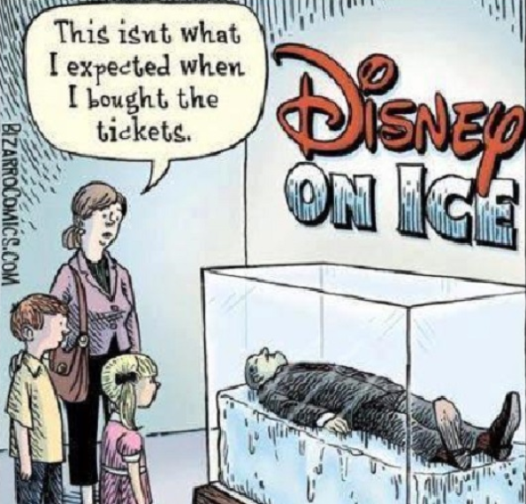
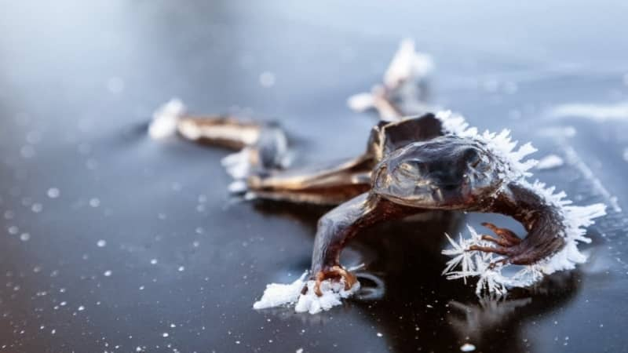
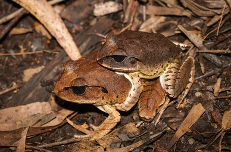

"Genes… Lo que ni todo el dinero del mundo puede comprar..."
De la serie "Habitantes Maravillosos"
 ...un anfibio excepcional que habita principalmente en Canadá y Alaska.
...un anfibio excepcional que habita principalmente en Canadá y Alaska.
Aunque no puede presumir acerca de su tamaño (mide entre 4 y 7 cm), este “disfrazado príncipe " tiene -de hecho- un bien guardado secreto que supera nuestra imaginación. Bueno, no la imaginación de todo el mundo en verdad, dado que el mismísimo Walt Disney ha propuesto esta herramienta para su supervivencia.
Sí, me refiero a la criopreservación.

Como en un giro en una novela fantasiosa, lo que Walt Disney soñó una vez, esta rana puede hacerlo gracias a sus genes.
Es cierto que no sabemos si Walt fue realmente congelado antes de morir o si todo es un desconcertante mito. Hay quienes dicen que está muerto pero también otros que sostienen que está bajo cero desde 1966, esperando la cura del cáncer. Desafortunadamente, no podemos arrojar luz a este misterio, aunque se podría decir que una persona con semejante cantidad de dinero tiene la posibilidad de hacer cualquier cosa que se le venga en ganas. Así que no sería muy sorprendente si tarde o temprano Walt Disney se vuelve el centro de atención con una nueva película animada con “caminantes blancos" en ella.
Pero volvamos al personaje principal de esta historia, la rana, para variar.
Es cierto que no sabemos si Walt fue realmente congelado antes de morir o si todo es un desconcertante mito. Hay quienes dicen que está muerto pero también otros que sostienen que está bajo cero desde 1966, esperando la cura del cáncer. Desafortunadamente, no podemos arrojar luz a este misterio, aunque se podría decir que una persona con semejante cantidad de dinero tiene la posibilidad de hacer cualquier cosa que se le venga en ganas. Así que no sería muy sorprendente si tarde o temprano Walt Disney se vuelve el centro de atención con una nueva película animada con “caminantes blancos" en ella.
Pero volvamos al personaje principal de esta historia, la rana, para variar.
 Si es el resultado de un hechizo malvado o no, no lo sabríamos decir, pero Lithobates sylvaticus es una de las cuatro especies en USA que detiene su respiración durante todo el invierno para despertar en el verano. Es necesario el beso de una dama? No lo parece.
Si es el resultado de un hechizo malvado o no, no lo sabríamos decir, pero Lithobates sylvaticus es una de las cuatro especies en USA que detiene su respiración durante todo el invierno para despertar en el verano. Es necesario el beso de una dama? No lo parece.
Esta rana es clasificada como extremófila, debido a su capacidad de vencer temperaturas extremas y sobrevivir, y cómo lo hace es detalle más importante e interesante: se congela a sí misma en estado sólido. Sé que suena como ciencia-ficción!
El líquido presente en el cuerpo de la rana se convierte en hielo en un 65%, mientras que el resto es afectado por un alto nivel de glucosa producido por el hígado a propósito de este evento, ya que ésta actúa como anticoagulante. Se entiende que "el secreto de la vida" está en que la rana cuenta con nucleoproteinas que evitan la formación de cristales de hielo de gran tamaño, los cuales podrían dañar los órganos internos. Además, es capaz de soportar esta irregular concentración de azúcar, la cual constituiría una amenaza de vida para los seres humanos.

Luego de una estación muy dura, sin ninguna actividad cerebral, respiración o latido, luciendo como una simple roca en el suelo... Cuando el sol se eleva más alto en el cielo y los días empiezan a sentirse cálidos otra vez, el primer órgano de la rana en descongelarse es -increíblemente- el corazón.
Sí, parece que un romántico novelista hubiera escrito el código genético de “Lithobates sylvaticus”.
Bum, bum, bum…
El bello durmiente ha despertado.
Sí, parece que un romántico novelista hubiera escrito el código genético de “Lithobates sylvaticus”.
Bum, bum, bum…
El bello durmiente ha despertado.
Una vez que la hibernación es completa y él está activo de nuevo, migrará a los estanques de cría lo más rápido posible: nuestro querido príncipe encontrará una amante para contrarrestar -finalmente- toda la fría soledad del invierno.
Fin
Fin
Gracias por leerme!!
Espero que hayas disfrutado mucho mi trabajo! No sólo redacté el texto del post sino que también escribí el código de la página web y su diseño. El desafío es grande pero soy una estudiante muy estusiasta. :)
Por favor, dame tu "ME GUSTA" y COMPARTÍ la publicación para ayudarme a expandir la comunidad de habitantes maravillosos! Si accedes a través de una computadora, recordá que podés dejar tu comentario al final de la página. O podés enviarme un e-mail, si querés!. De cualquier manera que prefieras voy a apreciar mucho tu apoyo!.
Si te gustó el tema, te invito a leer el contenido BONUS debajo.

Por propósitos narrativos, en mi historia parece que el regreso a la vida de la rana es un milagro inmediato, pero esa no es la verdad. El proceso de derretimiento de hielo puede durar entre varios minutos y unas cuantas horas, siendo más probable esto último. El corazón es el primer órgano en emprender su función a fin de asegurar la irrigación sanguínea necesaria para el resto de los órganos y el cuerpo.
Habiendo aclarado esto, quisiera compartir con ustedes otros datos científicos acerca de “Lithobates sylvaticus” que me resultaron fascinantes.
El apareamiento requiere un método de "prueba y error" porque carecen de la habilidad de reconocimiento de sexo. Entonces, lo que hacen los machos "interesados" es abrazar a otras ranas del estanque (machos incluídos) y simplemente liberar a aquellas ranas que no son “lo suficientemente gordas” como para estar portando muchos huevos (entendiendo por ello que no son hembras).
Por otra parte, sí son capaces de reconocer su propia familia, tendiendo a formar grupos entre hermanos y pasar el rato juntos, dejando de lado a las ranas no familiares. Qué especie más amorosa!!!
Y finalmente, los anfibios en general constituyen un importante indicador de salud ambiental. Así que, por un mundo más lleno de ranas increíbles y menos de príncipes ficticios, si te cruzas con una rana, por favor, dejala ser...
Sin más que hacer, me despido por ahora! Hasta el próximo post!
Fuentes Principales:
Animal Diversity Web
NatureServe Explorer
The National Wildlife Federation
Habiendo aclarado esto, quisiera compartir con ustedes otros datos científicos acerca de “Lithobates sylvaticus” que me resultaron fascinantes.
El apareamiento requiere un método de "prueba y error" porque carecen de la habilidad de reconocimiento de sexo. Entonces, lo que hacen los machos "interesados" es abrazar a otras ranas del estanque (machos incluídos) y simplemente liberar a aquellas ranas que no son “lo suficientemente gordas” como para estar portando muchos huevos (entendiendo por ello que no son hembras).
Por otra parte, sí son capaces de reconocer su propia familia, tendiendo a formar grupos entre hermanos y pasar el rato juntos, dejando de lado a las ranas no familiares. Qué especie más amorosa!!!
Y finalmente, los anfibios en general constituyen un importante indicador de salud ambiental. Así que, por un mundo más lleno de ranas increíbles y menos de príncipes ficticios, si te cruzas con una rana, por favor, dejala ser...
Sin más que hacer, me despido por ahora! Hasta el próximo post!
Fuentes Principales:
Animal Diversity Web
NatureServe Explorer
The National Wildlife Federation